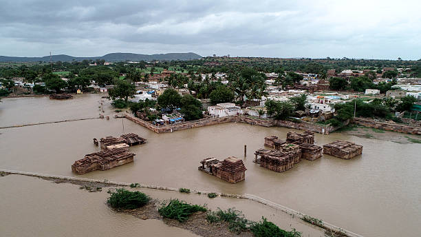
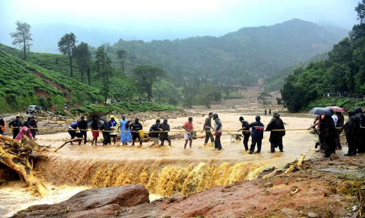

Introduction
Natural disasters such as earthquakes, floods, hurricanes, and wildfires have profound economic impacts on communities, nations, and the global economy. These events disrupt production, destroy infrastructure, and lead to significant financial losses. This webpage explores the various ways natural disasters affect economies and discusses strategies for recovery and resilience.

Causes of Economic Losses
Natural disasters cause economic damage through several mechanisms:
- Direct Damage: Destruction of physical assets like buildings, roads, and equipment.
- Indirect Losses: Disruption of supply chains, business closures, and loss of productivity.
- Human Capital Impact: Loss of life, injuries, and displacement affecting the workforce.
- Opportunity Costs: Resources diverted from development to emergency response and reconstruction.
Economic Impacts
The economic consequences of natural disasters can be categorized as follows:
Short-term Impacts
- Immediate loss of assets and production capacity
- Disruption of transportation and communication networks
- Increase in emergency spending
Long-term Impacts
- Reduced GDP growth
- Increased poverty and inequality
- Higher insurance premiums and borrowing costs
According to the World Bank, natural disasters cost the global economy over $520 billion annually.
Case Studies
2018 Kerala Floods (India)
- Infrastructure damage: Over ₹10,000 crore
- Agricultural losses: ₹3,000 crore
- Tourism decline: 23% post-flood

Hurricane Katrina (2005, USA)
- Total economic cost: $125 billion
- Long-term GDP impact: Reduced growth by 0.5-1%
- Population displacement: 1.5 million people
2011 Tohoku Earthquake and Tsunami (Japan)
- Direct economic loss: $235 billion
- Nuclear disaster costs: Additional $100 billion
- Global supply chain disruptions
Recovery Strategies
Effective recovery from natural disasters requires coordinated efforts:
| Strategy |
Description |
| Disaster Preparedness |
Invest in early warning systems, infrastructure resilience, and emergency planning |
| Insurance Mechanisms |
Promote disaster insurance and risk-sharing pools |
| International Aid |
Leverage global support for reconstruction and capacity building |
| Sustainable Development |
Incorporate climate change adaptation into long-term planning |
References
- World Bank: Natural Disasters and Economic Development
- United Nations Office for Disaster Risk Reduction (UNDRR)
- International Monetary Fund (IMF) reports on disaster economics
- Government of Kerala: Rebuild Kerala Initiative